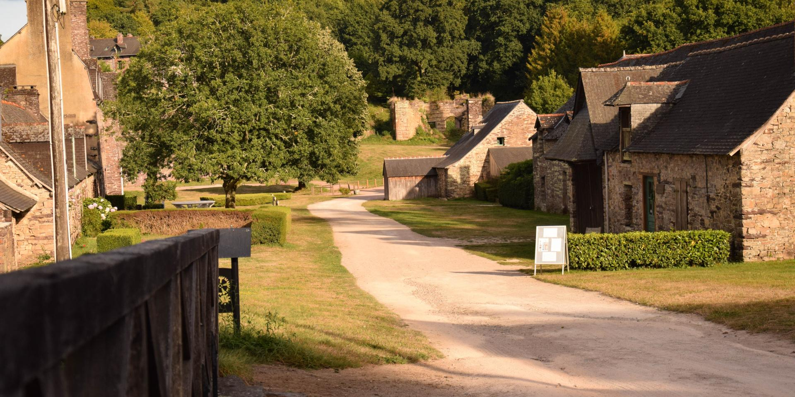

Programme

Vendredi 22 septembre 2023
- 11h : mariage civil à la mairie de Cesson-Sévigné (pour ceux qui veulent)
- 12h : déjeuner à la crêperie (plus d'infos à venir)
- 14h : installation de la salle aux Forges de Paimpont
Samedi 23 septembre 2023
- 11h : mariage religieux à l'église Saint Martin de Cesson-Sévigné
- 14h30 : déjeuner aux Forges de Paimpont (l'horaire est indicatif et pourra être modifié)
- 20h : buffet suivi d'une soirée (toujours aux Forges de Paimpont)
Dimanche 24 septembre 2023
- 12h : Brunch aux Forges de Paimpont pour ceux qui veulent prolonger l'expérience